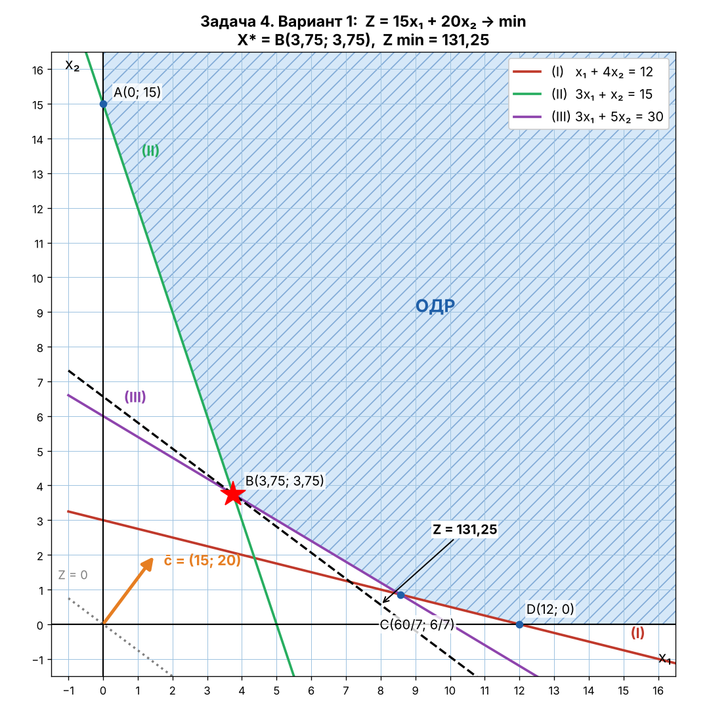
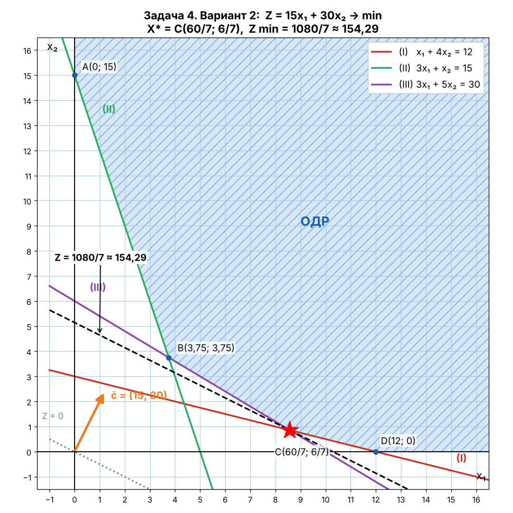

| Питательные вещества | Корма | ||
|---|---|---|---|
| Наименование | Норма | K1 | K2 |
| S1 | 12 | 1 | 4 |
| S2 | 15 | 3 | 1 |
| S3 | 30 | 3 | 5 |
| Цена | 15 | 20 | |
X = (x₁, x₂) Кол-во кормов K1, K2
Z = 15x₁ + 20x₂ → min
Построение прямых:
| Прямая | x₁ = 0 | x₂ = 0 |
|---|---|---|
| (I) x₁ + 4x₂ = 12 | x₂ = 3 | x₁ = 12 |
| (II) 3x₁ + x₂ = 15 | x₂ = 15 | x₁ = 5 |
| (III) 3x₁ + 5x₂ = 30 | x₂ = 6 | x₁ = 10 |
Проверка точкой O(0; 0): 0 ≥ 12, 0 ≥ 15, 0 ≥ 30 — неверно ⇒ берём полуплоскости, не содержащие O.
ОДР — неограниченная область, вершины A(0; 15), B, C, D(12; 0).

c̄ = (15; 20). Строим линию уровня Z = 0 ⊥ c̄ и перемещаем по направлению c̄. Первая точка ОДР (точка входа) — B = (II) ∩ (III):
Вычтем: 4x₂ = 15, x₂ = 3,75, 3x₁ = 15 − 3,75 = 11,25, x₁ = 3,75
B(3,75; 3,75)
Z min = 15·3,75 + 20·3,75 = 56,25 + 75 = 131,25
Ответ: X* = (3,75; 3,75), Z min = 131,25
Анализ устойчивости
Оптимальное решение лежит на пересечении прямых (II) и (III).
Питательные вещества:
S1: 3,75 + 4·3,75 = 18,75 > 12 — с избытком (6,75)
S2: 3·3,75 + 3,75 = 15 = 15 — по норме
S3: 3·3,75 + 5·3,75 = 30 = 30 — по норме
| Питательные вещества | Корма | ||
|---|---|---|---|
| Наименование | Норма | K1 | K2 |
| S1 | 12 | 1 | 4 |
| S2 | 15 | 3 | 1 |
| S3 | 30 | 3 | 5 |
| Цена | 15 | 30 | |
X = (x₁, x₂) Кол-во кормов K1, K2
Z = 15x₁ + 30x₂ → min
Построение прямых:
| Прямая | x₁ = 0 | x₂ = 0 |
|---|---|---|
| (I) x₁ + 4x₂ = 12 | x₂ = 3 | x₁ = 12 |
| (II) 3x₁ + x₂ = 15 | x₂ = 15 | x₁ = 5 |
| (III) 3x₁ + 5x₂ = 30 | x₂ = 6 | x₁ = 10 |
Проверка точкой O(0; 0): 0 ≥ 12, 0 ≥ 15, 0 ≥ 30 — неверно ⇒ берём полуплоскости, не содержащие O.
ОДР — неограниченная область, вершины A(0; 15), B, C, D(12; 0).

c̄ = (15; 30). Строим линию уровня Z = 0 ⊥ c̄ и перемещаем по направлению c̄. Первая точка ОДР (точка входа) — C = (I) ∩ (III):
x₁ = 12 − 4x₂; 3(12 − 4x₂) + 5x₂ = 30 ⇒ 36 − 7x₂ = 30, x₂ = 6/7, x₁ = 12 − 24/7 = 60/7
C(60/7; 6/7)
Z min = 15·60/7 + 30·6/7 = 900/7 + 180/7 = 1080/7 ≈ 154,29
Ответ: X* = (60/7; 6/7), Z min = 1080/7 ≈ 154,29
Анализ устойчивости
Оптимальное решение лежит на пересечении прямых (I) и (III).
Питательные вещества:
S1: 60/7 + 4·6/7 = 84/7 = 12 = 12 — по норме
S2: 3·60/7 + 6/7 = 186/7 ≈ 26,57 > 15 — с избытком (81/7 ≈ 11,57)
S3: 3·60/7 + 5·6/7 = 210/7 = 30 = 30 — по норме